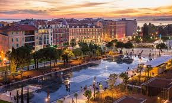

Nice the fifth most populous city in France is the most iconic location in the french riviera.Tucked in the southeast corner of France, this picturesque city sits at the foot of the Alps and stretchs along part of thr mediterranean coast.Nices relatively warm climate and stunning seaside have made it obe if Frances most popular destinations.Nice is one of those place in france where you wont struggle for reasons to visit.In fact i'd go as far as saying that with all the amazing things to do in Nice and the surroundings areas in the south of france,Nice is one french city that is atop many people's travel lists. The deep blue waters of the Coted'Azur are the dramatic backdrop for elegant Nice. Nice a city of history, culture, art, creation, events, leisure, nature and culnary havors, Nice combibnes an authentic charm with the conviviality of the mediterranean by offering a host of activities and sites to visit.

 Home
Home